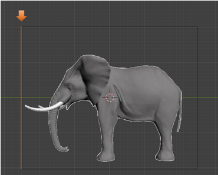

~Bringing in a Reference Image~
6/16/2025
Adding the Front Reference Image
Move the Front Image Reference into Position
Setting up the Properties in Property Panel
The Offset section of the Property Panel
Only Viewing Certain sides of the Image
Change The Back Image to Be Viewed Only When in Back View
Constraining Images to be Orthographic View Only
Finish the Opacity changes for all the images
Making the Reference Images to be non-selectable
Getting Started
One of the first steps that you will want to be able to do, when starting a 3D project in Blender, is to bring in a reference image. So, you can either create your own reference images, or bring in some stock images that are ready to take into the 3D world of Blender. You will want a front, back and side view image.
When you are a beginner, it might be easier to start off with some images that have already been made for this purpose. You may have to fine tune the lining up of these images either way; however, Blender is equipped to handle the shifting around of your image, and having them already created for you can be a lot easier, and save you both time; as well as, headaches.
As we move along in this tutorial, you may find us using a few things that we have all ready covered in previous tutorials.
Setting up
Open Blender, we can begin with our cube on the page.
Hitting the 5 key on the numpad in Blender, will toggle us from Orthographic mode to Perspective mode. We want to be in Orthographic mode. Now hit 1 key on the numpad and that will put the cube front and center in the screen. You will want to be in this visual position to bring in the Reference image.
Add a New Collection
You can close the collection with the cube in it and hide it. Remember that you can do this by hitting the eye at the end of the Collection line in the outliner. Now your cube will no longer be visible on the screen. It will still be there; we just hid it so it will be out of the way.
Now add a New Collection to the Outliner. You might have to make your panel wider to see and have access to the New Collection button at the top of the outliner.
Rename this new collection to Reference Images.
Adding the Front Reference Image
Back in the Viewport of the program. Hit Shift A- Image -Reference.
Browse to your images for your 3D model, and choose the one that represents the front orientation. Since we have the view in our viewport set to Orthographic mode first, this image should now come in perfectly, at the front view angle. Because that is what we set it at.
Naming the Reference Image
With that Image Reference Selected, we can hit the F2 key at the top of our key board, and that will bring up a textbox where we can name the image that we just brought in.
Adding the Side View
Now we are going to do the same thing, and bring in the side view. This time in order to bring it in correctly we need to have the view port set to Right Orthographic view Hit the 3 key on the numpad to turn it to the side view. Our first image that we brought in to represent the front view will now only look like a very thin line, from this side view optical angle.
Now Shift – A – Image- Reference and bring in the Side image
Press F2 and name this one Image Side.
Move the Front Image Reference into Position
We don’t exactly want our Images on top of each other. So, while we are in side view, we want to move the Image Front to the left. This way it lies directly at the left side of our side image, instead of in the center of it.
Hit G key for Move, and Y to constrain the move to the Y axis. Our image is sitting here now, to the left of the Image Side.

Adding the Back View
To view the scene from the back, we need to hit ctrl-1 on the numpad. The number 1 is for the front view, and since the back view is the opposite to the front view, it will be set by hitting the ctrl-1 button on the numpad of your keyboard.
Notice that when we go to the back view, we are still seeing the front view of the elephant. That is because we will need to change a few settings in the property panel to fix this.
But for now, just hit the shift-A-Image-reference and bring in the reference image for the back.
Now Hit the 3 key on the key board numpad. This time we want to move this back image to the right side of Image Side. Like This. Use the G key and the Y key to move and constrain the move respectively.
Setting up the Properties in Property Panel
You want to click on the Object Data Properties for the Image section in the Property Panel. Since we have an image selected this icon would have changed from a green triangle (which is what it is for an object) to an icon that looks like an image.

The Offset section of the Property Panel
You would use the offset section of the Property panel to move the image around in the viewport. Notice right now that the offset is set to -0.50. The Y setting would move the image up and down, and the X setting will move the image from side to side. So, if we set this Y option to be 0, it will raise up the image and set it flat on the grid line, and will no longer straddle it. We can also use this setting to line up the reference images, if your images seem to be a bit off.
Setting the Opacity
This section of the Property panel will deal with the opacity. To work with these reference images, we actually need to see a bit through them to the 3D model, so we can work with them with more accuracy. The setting here for your images will vary. So, you want to be looking at them, while you can decide just how much opacity that you will need.
We turn this option on by checking on the check box for Opacity. And then setting it.
Only Viewing Certain sides of the Image
To keep these images from confusing the mess out of you while you have your objects facing at opposing angles, you will want to change the setting where you can only see the image while you are working in the view that is specified for it.
For Instance, when we are in front view. We only want to view the image, in Front view. Otherwise we want the image to be invisible and stay out of our way.
Click on Image Front to select it.
Now in the Property panel, we want to change the Side option away from the default setting of Both to just Front. Now you will only see the image from the front.
But turn the viewport around and you will not see the image from the back.
Change The Back Image to Be Viewed Only When in Back View
Now when we go to the back, we still need to set the setting of the View to front, because when we are looking at it from the back, then it still considered the front for this view also. A bit confusing, but just set both the back image and the front image to be Front.
So, select the Image Back, and change the Side setting to Front.
We are now only seeing this image from the back
Constraining Images to be Orthographic View Only
We also have another setting where we can set the view to only a straight on angle. That means you must be in Orthographic view in order to view the image, and to model from it. This can be helpful, because it keeps you modeling your 3D object from only one angle. This way it will get lopsided because you are trying to model from all over the place.
Also with perspective set, you do not even see the orange lines from the border of the image. The entire thing is invisible unless you select the Orthographic. Remember this is a setting of 1 from the numpad to have front view, or ctrl-1, to view the back. Oh, and 3 for or ctrl 3 for the right and left sides.
Uncheck the perspective view from the Image Back. Now with this box unchecked, you will see that unless you press ctrl-1, you will not see the image at all. See the back view has disappeared.
Now Hit ctrl-1, and you will see the back view. This is your orthographic angle, and the only one that this image is visible.
Now turn off the Perspective for the front view, and it will start behaving in the same manner. The only way you can see the image is if you hit the number 1 on the numpad of your key board.
Hit 1 on the numpad to see the front image.
Finish the Opacity changes for all the images
We want to use the cube, while we are doing this. So, turn back on the cube in the outliner again.
For the side view, we do not really need it turned down too much. If it is bright you might want to adjust it to be more comfortable on your eyes.
You might also want to set the perspective for this one too, so we do not get any warp from our model building. Since we have the sides set to both. It will work and we will be able to see it from either the right or the left side, we are just constricted from doing any rogue modeling.
Now for the Front, we are going to want to bring this opacity setting down, since the front image certainly is in front of the object and it will completely cover it, if we don’t.
Now we will go to the back, and bring down the opacity for this one as well. Since the reference image for the back is also blocking the view of the object.
The opacity setting of 0.318 seems to work out well for these reference images. Yours may be different.
Making the Reference Images to be non-selectable
Remember, from last week’s tutorial that we are able to make elements in the outliner, become un-selectable, but we need to open the funnel menu in the outliner, and turn on this option first.
Open this funnel button and then turn on this arrow, which is facing left and upward.
Now we can see that we have added the select-ability option button to the outliner, and so now we can use it.
Turn off the selectable button that now lies to the right of the Reference images Collection. All of the images, which are children of the collection will be affected, and will turn off too.
So, now if you attempt to select any one of the images, it will have no effect. This is what we want as we do not want these images moving around while we are modeling.
The more reference images that you have, the better. You can have top views and bottom views, and some even have views from different perspective angle while in side view. Reference Images are a great way to start any project, and this is a great way to end this tutorial.